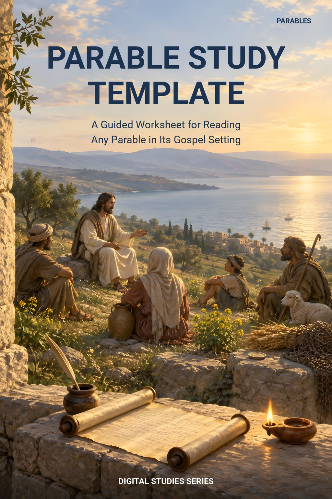
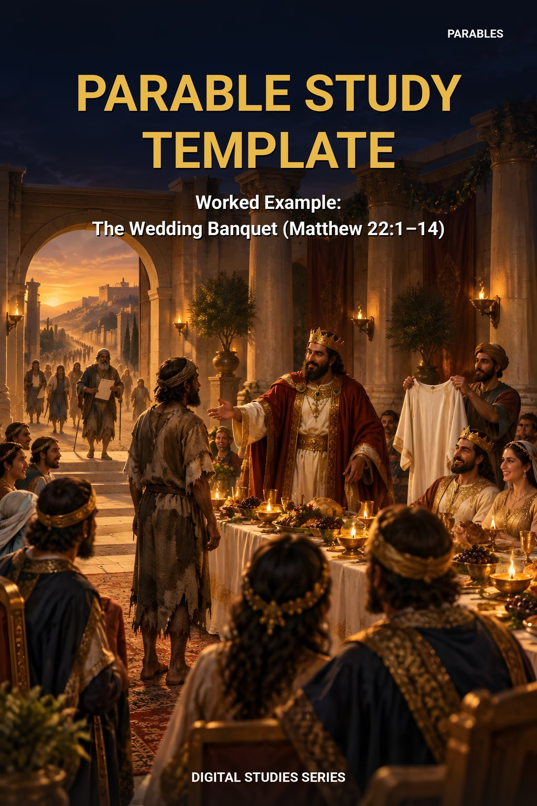
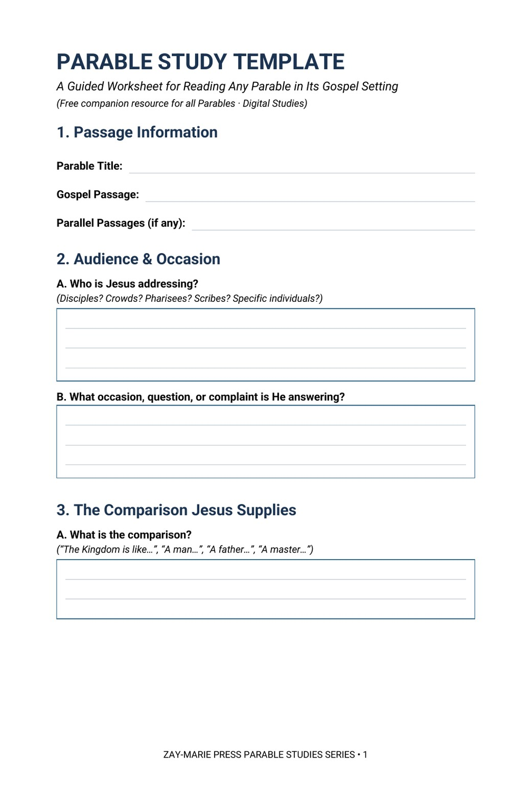
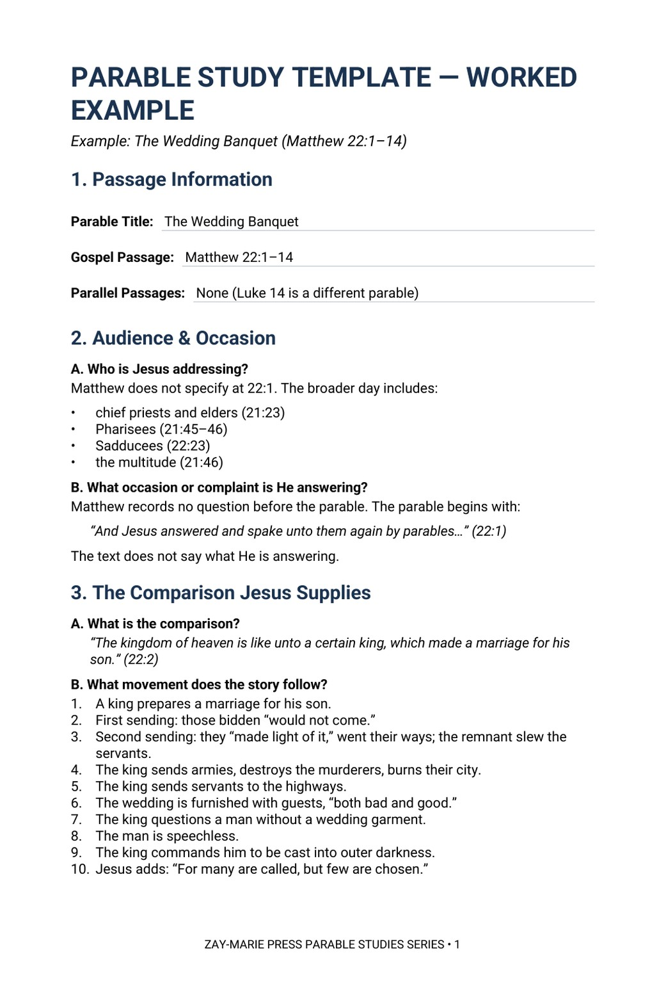

Parable Study Template
The blank worksheet, with a writing box for each prompt. Use it with any parable, whether or not you own the study for it.
Download the Template
A guided worksheet for reading any parable in its Gospel setting
Eight short sections walk you through who Jesus is addressing, what He is answering, the comparison He supplies, what He names and what He leaves unnamed, where the parable stops, and what it says. Print it, fill it in, and keep it with your Bible.
Free to every reader of the Parables studies. A worked example on the Wedding Banquet shows the template filled in.
The blank worksheet, with a writing box for each prompt. Use it with any parable, whether or not you own the study for it.
Download the Template
The same template completed for Matthew 22:1–14, so you can see what a finished page looks like before you begin your own.
Download the Worked Example
